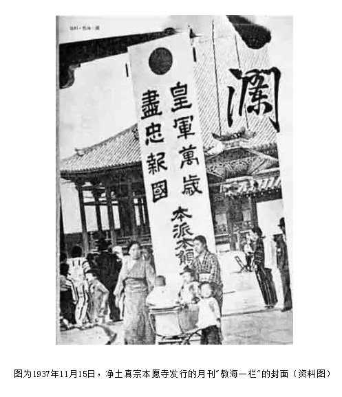
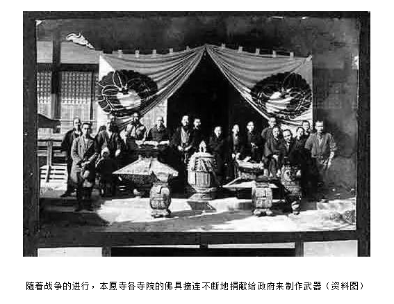

|
“如说修行”网上佛学院 不要提倡日本本愿法门隆盎
【编者按】法然上人及其宗徒大肆鼓吹：称名必生，不用修行，不须持戒，不须行善，不须自净其意，甚至终生作恶都无所谓。问题在于，真的是称名必生吗？这符合古往今来的实际情形吗？如果真的是称名必生，本师释迦牟尼佛又何必在《称赞净土佛摄受经》中讲系念不乱，而且要念佛人如说修行，勿生疑虑，勿行放逸；而十方诸佛（包括阿弥陀佛）又怎么会赞叹、摄受这个系念不乱的法门呢？如果真的是称名必生，阿弥陀佛再来的善导大师又何必还要说“临终正念”（详见《“善导大师临终往生正念文”注》一文）与“相续即生”（详见《善导大师：相续即生》一文）呢？阿弥陀佛再来的永明大师又何必还要说“临终十念成就”呢？（详见《第十八愿》一文 。）所以，不是称名必生。（详见《称名必生吗？》一文 。）如果你听信他们的邪说，既不能够往生西方极乐世界，而又不持戒、不行善、不自净其意，甚至终生作恶，那么等待你的必是三途恶道，乃至无间地狱！（详见《本愿法门是附佛外道》）你想过吗？一念差错，历劫受苦，谁人相代？思之！思之！ 〔自净其意〕出自七佛通戒偈：“诸恶莫作，众善奉行，自净其意，是诸佛教。”这是过去七佛对佛弟子的共通教诫，是佛法修行的总纲。邪说鼓吹“不须持戒”，这是否定“诸恶莫作”；“不须修福”，这是否定“众善奉行”；加之不须“自净其意”。难道，这还是佛教吗？〔七佛〕指过去的七佛，即毗婆尸佛、尸弃佛、毗舍浮佛、拘留孙佛、拘那含牟尼佛、迦叶佛和释迦牟尼佛。〔临终十念成就〕永明大师云：“如要临终十念成就，但预办津梁，合集功德，回向此时，念念不亏，即无虑矣。”（《万善同归集》）〔预办津梁〕“津梁”：渡口和桥梁。“预办津梁”就是预先做好准备。
近年来一股不可小视的逆流正越来越严重地冲击着中国佛教界。有那么一小部分人主张中国佛教应该走日本佛教的道路，主张放弃汉传佛教“僧装、素食、独身”的优良传统，要求放宽戒律。更有甚者，有的人在外来巨资的支持下，大量非法印刷散发日本本愿法门的书籍，不遗余力地传播本愿法门。一些道心不坚定，认为持戒修行太苦，或者依教修行太难的出家僧人，以及一些不愿老实念佛的修净土法门的佛教徒，为贪图便宜，累累上当受骗，糊糊里堡地成了日本本愿法门的信奉者和传播者。 让我们来看看日本佛教及其本愿法门的一些真实情况。 一、日本佛教已陷入变质的困境

中国佛教是北传佛教的中心，三藏十二部中主要的大乘经典均由汉文译本而得以比较完整的保存下来。两千年来，经过中国佛教界的高僧大德的共同奉献，使北传大乘佛教不但在中国十分兴旺发达，而且逐步传到朝鲜、日本、越南、东南亚及欧美各国。 日本非常重视中国佛教，千多年来，不但派遣了大批僧人来华学习，而且．请回大部分的汉文佛教经典。日本人对佛教教理的研究是相当努力，而且是有令人赞叹的成绩的。中国的华严宗、天台宗、唯识宗、真言宗（东密）及净土宗等各宗派在日本都有传承，至今仍有不少依教修行的佛教徒。中国佛教传入后，日本人民中多数都信仰佛教。 日本佛教在弘传过程中，有的宗派犯了两个严重错误： 第一个错误是只讲教理研究，不讲持戒修行。日本佛教分为两门即“一学门，二行门”。不少知识分子走学门的路，仅只将佛教当成学问来研究，把教理和修行截然分开。这批佛教徒有不同的社团组织，诸如有名的“创价学会”等，他们热衷参与政治，日本的佛教党甚至成为日本较大的政党，这与中国佛教不干予政治的优良传统大相径庭。奉行“行门”的不侧重教理研究，也不讲持戒修行，只搞抽签算命、超度亡灵。 第二个错误是为了贪图方便简单，错误地割裂佛经，曲解佛言祖语。比如日莲宗只要求称念“南无妙华莲华经”及称念一句“南无阿弥陀佛”。他们都放弃戒律，允许出家僧人娶妻生子，也不要求行善修菩萨行。日本的净土真宗只要求以报恩的心态随意的念一念“南无阿弥驼佛”就行了。 这两大错误观点的后果是日本佛教已逐渐走到了没有多少真正持戒修行的僧团，却有不少娶妻生子、喝酒吃肉的，白天进庙上班的“职业和尚”。这些职业和尚白天到寺庙中去为人抽签算命，超度亡灵，收入的钱也属于个人所有。日本的寺庙中从几十到二三百平方米的小庙相当多，庙中只有一个和尚，庙产及收入全归这个和尚一家人所有。所以日本佛教与有优秀传统的注重‘信、解、行、证”，重视持戒修行的中国佛教已相去极远。中国佛教决不能走日本佛教的道路，否则必将迅速衰亡。 由于不讲戒律，少有真正的僧团和真正的修行人，在日本佛教已经变质了，实际上变成为一种文化现象。日本的净土真宗奉行的本愿法门在日本佛教变质的过程中起到了较大的作用。 二、日本本愿法门是曲解佛经而建立的日本本愿法门是日本僧人源信（942—1017）及法然（1133—1212）创立的一个教门。他们曲解佛经及祖师本意，为立本宗不顾佛教基本教义，肆意发挥，具有相当的迷惑性。根据法然的《选择本愿念佛集》及小栗宪一的《净宗要旨》等书，将本愿法门的基本主张简介如下： 1、本愿法门依据的经典是净土三经，但舍去“假方便’的《观无量寿佛经》及《佛说阿弥陀经》，只选择“真真实”的《无量寿经》，在《无量寿经》中舍去第十九愿和第二十愿等四十七愿，只选取第十八愿。一部佛经除《无量寿经》的第十八愿外，其余全都舍去，公然宣称要舍弃圣道。（按：《阿弥陀经》是诸佛（当然也包括阿弥陀佛）赞叹之“一切诸佛（当然也包括阿弥陀佛）所护念经”。在《阿弥陀经》中，释迦牟尼佛言：“西方世界，有无量寿佛、无量相佛、无量幢佛、大光佛、大明佛、宝相佛、净光佛，如是等恒河沙数诸佛，各于其国，出广长舌相，遍覆三千大千世界，说诚实言：汝等众生，当信是称赞不可思议功德一切诸佛所护念经。”这部为诸佛所护念的经，竟然被他们污蔑成“假方便”而加以废除。谤佛毁法，竟至于此！这样的人，能够往生西方极乐世界吗？地狱的熊熊烈火正等着他们！） 2、曲解第十八愿“我作佛时，十方众生，闻我名号，至心信乐，所有善根，心心回向，愿生我国，乃至十念，若不生者，不取正觉。唯除五逆，诽谤正法。”只选择“闻我名号，至心信乐”两句，其余“所有善根，心心回向，愿生我国”等均要舍去。说什么：只要读了宣扬本愿法门的书，闻本愿法门的教，一旦“获得信心，当下就取得了决定往生的身份，不论何时何地何缘死去”即使在侵华战争中残酷杀了中国人而被打死的日本人“都决定往生极乐。”，甚至说，只要信了本愿法门的教，当下瞬间就已往生，“住不退转”。随意念念佛也只是报佛恩，即使干了杀人放火的事，“任凭佛力救度”，不但不受惩罚，反而必生极乐。他们将第十八愿中“唯除五逆，诽谤正法’也要舍去。他们明确反对布施持戒，修诸善法，植诸德本，更不要忏悔业障，随喜功德。 3、宣扬“纯他力”论，认为只要信了本愿法门，相信佛的本愿力不可思议，自己用不着丝毫自力，用不着持戒修行，“任恁佛救度”就行了。要求“选舍前布施持戒，乃至孝养父母等诸行”，说这些诸行都是杂修。只要信了本愿法门，当下就取得了“往生的身份’证，一切全交佛安排，躺在弥陀本愿大船上，自自然然，舒舒服服，一觉醒来就到了极乐世界去了。他们打包票“若有本宗门徒，肯定往生，就会成佛。” 4、反对因果，宣扬“他作我受”，反对“自作自受”。本来，往生极乐的正因是念佛人自己“信、愿、持名”具足，佛力只是往生的增上缘。而本愿法门却胡说往生之事“佛已代我成就，佛将此成就白送给你，你都不要吗？”在“信、愿、行”三资粮中，只提信佛力即信纯他力，而反对信自、信因、信果、信事、信理。 5、反对发菩提心，修菩萨行。发无上菩萨提心，修菩萨行是成佛的因，而本愿法门胡说“上三辈中虽举菩提心等余行，释迦即不赞叹余行。”公然诬蔑释迦“不赞叹”发菩提心，修菩萨行等余行，真是胆大妄为！ 稍有基本佛学知识的，一眼就会看清楚日本本愿法门的上述谬论是违背佛教经典的，是十分错误的，非常有害的邪门。它已给日本佛教带来不可挽回的巨大灾难，我们必须坚决据理彻底逐一批驳。 三、我国祖师大德痛斥日本本愿法门我国历代祖师大德都是走的发菩提心，严守戒律，广行六度，坚持培福培慧，具足信愿行而往生西方极乐世界的，都是坚持主张净土法门是二力法门，坚决反对“纯他力”的。所以，没有哪一个祖师大德宣扬过本愿法门，确有不少祖师大德痛斥本愿法门的本质。 本世纪初中国佛教界大德杨仁山居士就逐一批判过《净宗教旨》及《选择本愿念佛集》。仁山居士说：“默人护持正法，过于身命”故对本愿法门猛烈抨击。本愿法门宣称要舍圣道，仁山说：“阿弥世尊以圣道修成本愿，若云舍圣道，则是违本愿矣。因果相违，岂得往生？”“生西方之人，亦由圣道而证妙果。”“信心者自心所起也，他力者自心所见之他力也。”“般若为诸佛之母……菩提心为因果交彻之心……菩提心而舍之，不知以何为佛也？”“今重念佛而轻菩提心，大违教义。”“用凡夫臆想捏造一法，以驾于佛经之上，罪过弥天！”“依文解义，三世佛怨；离经一字，即同魔说。” 当代大德印顺导师、圣严法师早就对日本佛教的变质及净土真宗多有批评。世界公认的当代净士宗大德净空法师最近也明确开示：“只是提倡临终十念，一念都能往生，平常可以不守戒律，可以胡作非为，可以造作罪业……临终时你有把握往生吗？”“提倡本愿，舍弃戒行，这是走险路啊！……把佛的意思全理解错了，曲解了。”他痛斥道：“提倡本愿念佛，那害死人呀！”“现在有一些人提倡本愿念佛：发愿求生就决定得生。哪有那么简单的事情？愿里头有行，这个愿才叫真愿。”“哪有说发愿可以不要修行，就能往生的？佛没有这个说法。” 有人说印光大师，黄念祖居士提到过本愿他力的重要。但他们根本没有提倡过本愿法门，他们都是反复强调“信、愿、行”三资粮的重要性。黄念祖居士的书就叫《净土资粮》。可以说从古代到今天中国的祖师大德没有一个人提倡过本愿法门。日本本愿法门称中国的昙鸾大师、道绰大师及善导大师是本愿法门的三个祖师，虽然他们都强调弥陀本愿力的不可思议，但从他们的著作和行持都证明他们都是发菩提心，广度众生，严持禁戒，精进修行的大士，他们都强调指出弥陀本愿是往生的增上缘。善导大师还谆谆教导“生死事大，须是自家着力始得”，是提倡“自他二力论”的，反对“纯他力”论的。 最近著名的大德郑颂英居士大声疾呼“摧邪显正”。他痛斥日本本愿法门是“邪魔”，强调“信愿行”三资粮必须具足，方能万修万人去。他责问道：“本愿法门竟然只要一信，完全不须行了，全仗他力，不要自力，这还是佛教吗？”他悲悯恳切地为我们敲起警钟道：“对这类全悖教理，贻误众生极其有害的邪说，必须深批严拒，敬希四众师友摧邪显正。” 四、本愿法门是日本军国主义侵华的工具第二次世界大战日本军国主义发动侵华战争，犯下滔天大罪，尤其是对中国人民的血腥屠杀，肆意杀光、抢光、烧光，给中国人民制造了无比深重的灾难。至今，还有不少日本人对这场战争拒不认错，不承认是“侵略”，是“犯罪”，而认为是“圣战”。为什么这些日本人这么善恶不分呢？除了其他原因外，与作为日本人民普通信奉的日本佛教主要教派失去了劝人行善的功能有关。日本佛教放弃持戒修行，鼓励杀生，舍去了佛教“诸恶莫作，众善奉行”的基本原则；公开宣扬“五恶谤法无所谓，只信本愿即往生”，实际上就是宣扬杀人无罪，抢劫无罪，奸淫无罪，毁谤正法无罪。这些正合符日本军国主义者的口味，本愿法门已堕落为日本军国主义侵略者的精神支柱和可耻工具。

在日本侵华期间，不少日本本愿法门的和尚随军服务，在中国不少地方如南京、安徽芜湖等地建立了日本本愿寺。日本和尚向日本兵鼓气说杀了中国人也可以入极乐世界，他们专门超度日本阵亡士兵，成了日本军国主义侵华的帮凶。饱受日本侵略苦难的中国人民早已对日本本愿法门十分痛恨，随着日本投降，这些日本本愿寺和尚也只能夹着尾巴逃出了中国。日本统治期间，中国台湾省各地也建立了不少本愿寺。台湾光复后，这些日本本愿法门的和尚也都可耻地地滚出了台湾。事实证明中国人民对日本本愿法门早已深恶痛绝，早已认清了它的反动本质。 五、坚决击溃日本本愿法门的冲击日本人民和中国人民是一衣带水的友好邻邦，日本真正正信的佛教徒与中国的正信佛教徒都是佛陀的弟子，是修学的同修道友，有千年情谊。但是日本有那么一些军国主义分子欺辱中国、亡我中华之心不死。他们在军事侵略失败后，搞经济侵略，经济侵略作用不大时，又妄图用文化侵略来搞垮中国。他们近年就图谋借用日本本愿法门从文化信仰为突破口来逐步控制中国。日本本愿法门在九十年代再传入中国台湾，再逐步传入中国大陆。他们舍得花数以千万计的资金来传播日本本愿法门，其背景值得深思！有少数的人，极力传播本愿法门，攻击中国传统佛教，成了他们的工具。我们要向这些人大喝一声，希望你们赶快悬岩勒马，回头是岸。 本愿法门的传播在中国有迅速蔓延开来之势，这主要是在两部份人中有市场。一小部分较年轻的出家人，他们没有建立真正的道心，对佛教义理知之甚少，有些人出家的目的就是到佛教来“就业”，最能迎合他们的是可以喝酒吃肉赌博，可以娶妻生子，不要求持戒，这种和尚实在又舒服又太好当了，当然会受到他们的欢迎。另外一部分是一些不明教理的居士，他们相信净土法门，迫切期望临命终时往生极乐世界。他们又觉得对自己往生没有把握，一听说本愿法门可以打包票保证他们往生，为贪图便宜，就容易上当受骗，被本愿法门拉过去了。也有些读了不少佛书，但并未读懂的人，也愿意持戒修行，却被本愿法门打着出自《无量寿经》、是善导大师倡导的等骗局的蒙蔽，他们被俘虏后，还投身到跨地区传播本愿法门的行列中去，作出损害中国佛教事业的傻事。这些佛教徒受日本本愿法门欺骗是暂时的，只要他们一旦认真了解了本愿法门曾作为日本侵华工具，是歪曲佛经祖意的歪法门这一事实真象后，一定会很快回到正确道路上来的。你们是中国佛教的佛教徒，不是日本佛教的教徒，你们肯定会回来的，我们热诚期待着你们脱离本愿法门，回到正宗的中国净土法门中来。 邪教组织“法轮功”要求只闭门炼功，不管他人事，不准他的弟子为抗洪抢险捐钱献爱心，只重“护法”不讲行善；本愿法门要求把行善作好事都要舍去，斥为“杂行”。李洪志说只要信了“法轮功”就可以带他入天国；本愿法门说只要信了本愿法门，他们就向你保证肯定住生极乐极净土，立刻成佛。李洪志说他给你肚子安一个“法轮”就用不着炼气功，你就会百病消除，他的“法身”会保信你一切平安；本愿法门说只要你信了本愿法门，用不着行善积德，就可以往生成佛；纵使一生作恶也无所谓，可“任凭弥陀救度”。本愿法门将佛神化，佛犹如救世主“上帝”。他们任意分别取舍佛言祖语，肆意歪曲佛教教义，恶意反对佛陀制定的戒律，真是欺师灭祖，胆大妄为！他们自己决不可能往生极乐世界，而只会堕入地狱，真是太可悲了。本愿法门的作为与邪教组织“法轮功”何其相似乃尔！确实值得我们予以高度重视了。 日本本愿法门斥巨资在中国大量印刷非法出版物和传教，妄图成立新教派，以文化方式侵袭中国人民精神信仰，如果任其自由发展到如日本那样成立势力强大的佛教党之类的反动党派，对中国安定团结的大好形势将起到不可估量的破坏作用。 本愿法门的流传对中国佛教的冲击和破坏作用我们也不可低估，切不可以掉以轻心，任其自由发展。如果相当一批年青僧人信奉本愿法门，放弃持戒，那么中国佛教将不成其为真正的佛教了，佛陀正法就会提前几千年消亡了，人们的法身慧命毁了，佛陀的法命完了，这是多么可怕的情景啊！难道我们还不猛醒，还不奋起与日本本愿法门作坚决斗争吗？我们切不可以“随缘”为托辞，或者我并未决心专修净土法门，就对本愿法门听之任之，而应该诚恳地向勇于摧邪显正的高僧大德学习，高树法幢，旗帜鲜明地批判日本本愿法门，击退这股逆流！
参考阅读：
|